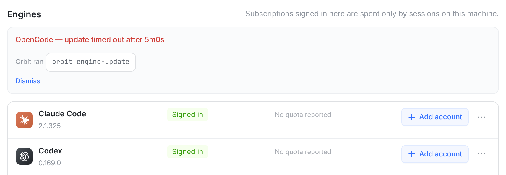
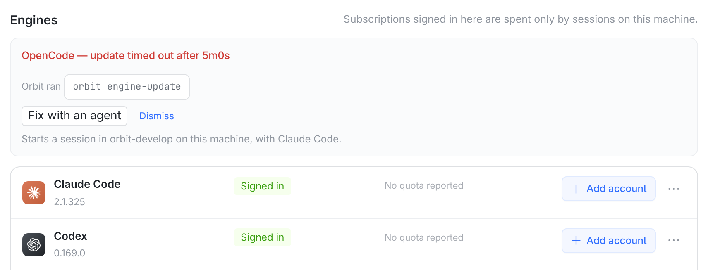
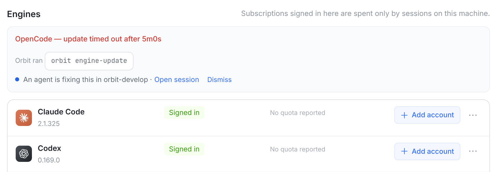
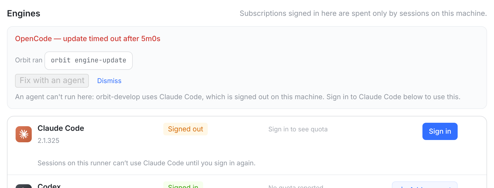
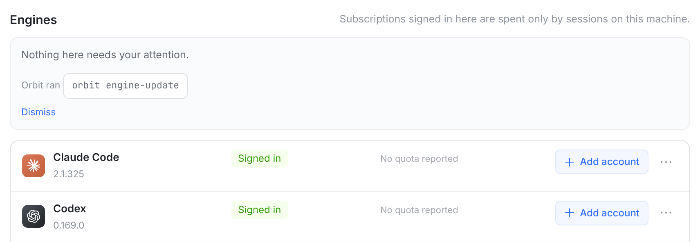

真实的机器页（本分支的 web 代码 + 假数据），只截 Engines 区顶部。三个决定都按推荐走：整个报告框一个按钮；跟 Needs attention 卡片各算各的；Agent 修完自己重跑 Update engines。
0今天
只有 Dismiss。

1能修
按钮在 Dismiss 前；下面一行写明会话在哪起、用哪个引擎。

2修理中
按钮换成 “An agent is fixing this in … · Open session”，Dismiss 还在。

3修不了
按钮置灰，写原因；引擎行在下面，所以写 “below”。

4修好了
Agent 重跑 Update engines，新报告没有红行，按钮也就不出现了。
